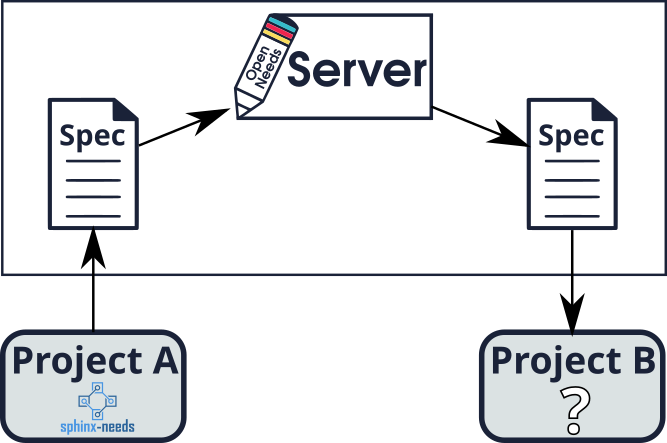
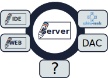
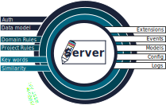
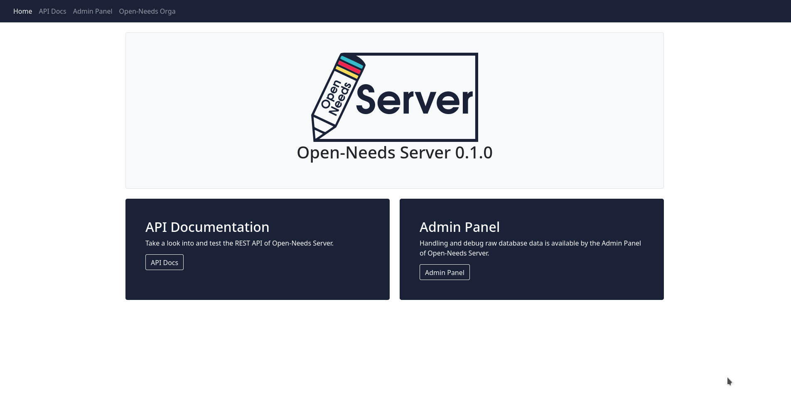
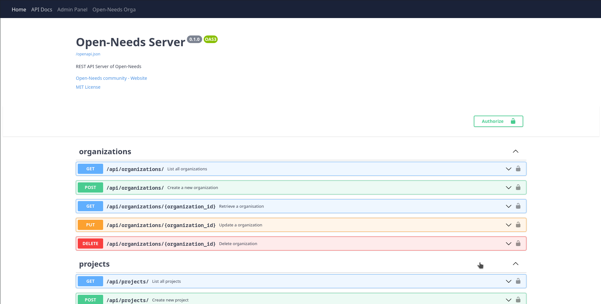
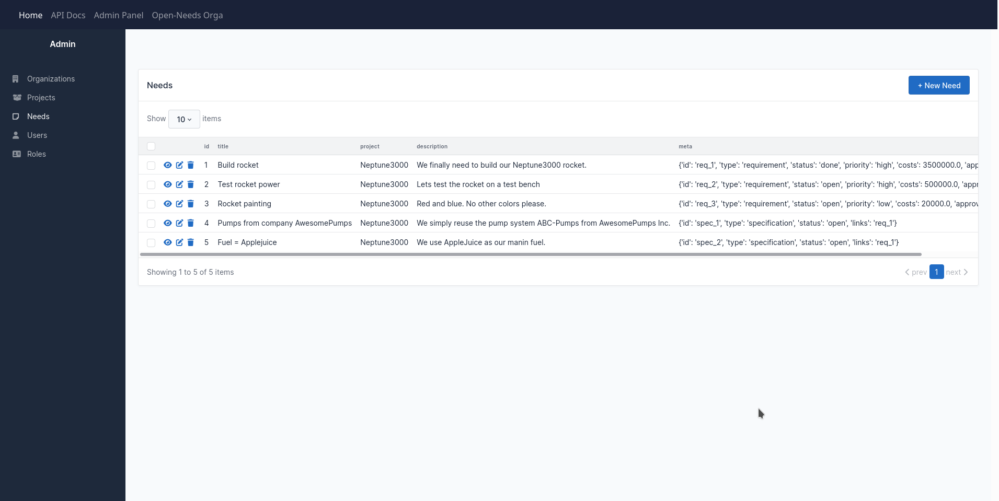
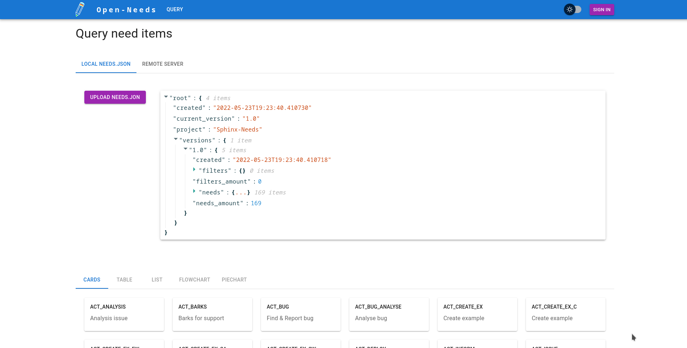
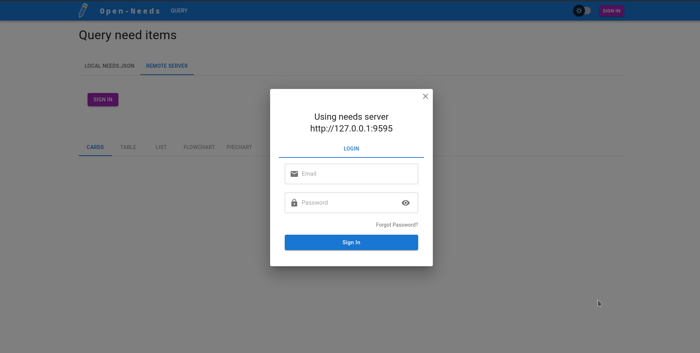

Introduction
Open-Needs is an open tool collection for managing and sharing life cycle related objects like requirements or specifications.
History & Recap
successor / enhancement of
{kind=link}
Recap Sphinx-Needs
It allows Software teams to maintain requirements and co. in Sphinx based docs-as-code projects. The data can be presented in tables, flow- and piecharts. Exported to json files. Synchronized with external services like Jira, Azure DevOps, and more. |
Sphinx-Needs Community
> 15 contributors
> 650 commits
~ 1.000 downloads per day
Used in Automotive Industry
Supports SW development projects with
> 1.000 engineers
> 100.000 reqs, specs, tests, …
Open-Needs Toolchain
Main use case
{kind=link}
Environment
{kind=link}
Features
{kind=link}
Screenshots
Server start page
{kind=link}
Server API docs
{kind=link}
Server Admin page
{kind=link}
WebApp JSON import
{kind=link}
WebApp Login
{kind=link}
Open-Needs Roadmap
Features
Store and provide elements ✔
Validate elements ✔
Authentication & authorization ✔
Store rule sets 🗒
Basic analysis 🗒
Sphinx-Needs integration 🗒
Use case specific frontends 🚫
Short-term scenario
Use Sphinx-Needs + export.
Supports docs-as-code based projects
Uses Open-Needs to store objects
Users: SW developers
Mid-term scenario
Use Open-Needs REST API with project specific tools.
Supports validation, analysis and data exchange.
Users: SW developers, team leaders and managers
Long-term scenario
Use-case specific frontends are available.
Users: use-case specific